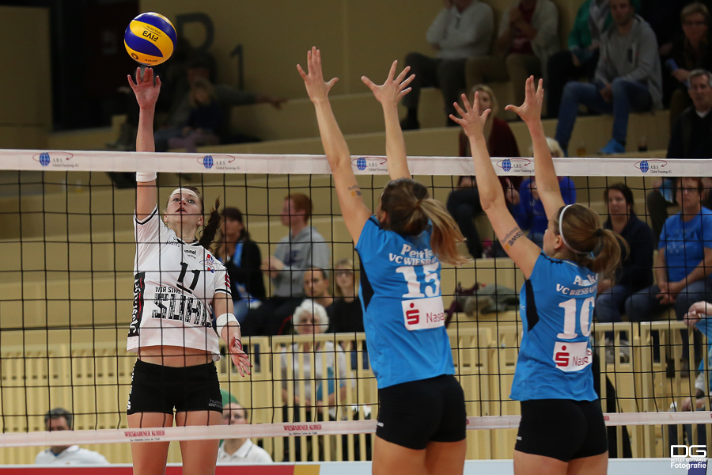
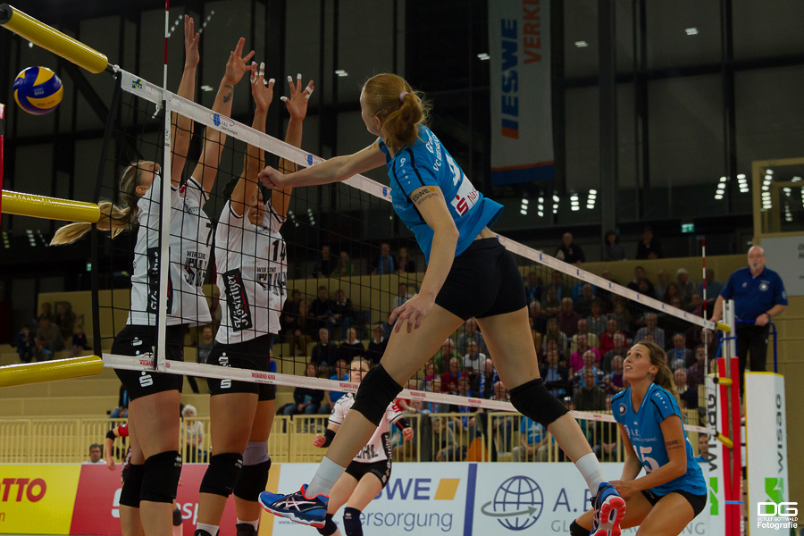

Gastautor*In .
Schreibt über: #GastautorIn #Gesellschaft #halloFFM
Renate Welkenbach stellt den VC Wiesbaden vor
In unserer Rubrik "aus der Nachbarschaft" schreiben Autor*innen aus dem Rhein-Main-Gebiet über das, was in ihrer Stadt so passiert. Heute freuen wir uns, dass Renate Welkenbach aka @NeosLove uns den Volleyballclub aus Wiesbaden vorstellt.
Wiesbaden – das ist DIE Stadt in Deutschland, deren Stadtbild aus der Vogelperspektive von vielen kleinen Punkten übersät ist; und diese Punkte werden beim Heranzoomen zu den Nasenspitzen all der hochnäsigen Leute, die hier leben … an dieser Stelle machen offenbar viele Auswärtige wieder den Deckel auf‘s Objektiv und wenden sich gelangweilt ab, sodass sich dieses Bild hartnäckig in der Öffentlichkeit hält.
Gleichzeitig lässt sich für alle, die offen genug sind, ihr persönliches Weltbild zu erweitern und den Fokus auch auf andere Details zu lenken, viel Erstaunliches entdecken. Plötzlich ist zu erkennen, dass vereinzelte oder auch Gruppen von Personen tatsächlich die Nase hoch halten – und zwar aus gutem Grund: zum Beispiel Volleyball.

Volleyball also. Und Nase hoch. Klar. Alle, die schon mal ein Spiel dieser Sportart verfolgt oder gar selbst ausgeübt haben, konnten sicher feststellen, dass der Ball sich doch häufig über Kopfhöhe befindet. Deshalb ist in diesem Zusammenhang möglicherweise einzusehen, dass die hoch gereckte Nase quasi eine anatomische Notwendigkeit zum Fokussieren der ballistischen Flugbahn ist. So viel schon mal zu äußerem Anschein und innerem Erleben.
Volleyball also. Leistungssport. Bundesliga. Da, wo andere Städte den Fußball hoch oder auch flach halten, hat Wiesbaden einen erstklassigen Volleyballclub: Der VCW spielt (mit kurzer Unterbrechung) seit über 30 Jahren in der Volleyball-Bundesliga und erfreut sich seither einer großen Fangemeinde, die ebenfalls jubelnd die Nase Richtung Himmel schiebt, wenn »die Mädels« im wahrsten Sinne des Wortes mit Pauken und Trompeten gewonnen haben. So viel zu weiteren Bedeutungsperspektiven.
Volleyball also. VCW. Damals. Etwa 1980 bin ich selbst dem VCW beigetreten – vor gefühlten drölfhundersiebenundachtzigtrilliarden Jahren. Ich war 17 Jahr‘ (allerdings ohne blondes Haar) und damit für eine echte Volleyballkarriere echt zu alt. Dafür hat‘s irre Spaß gemacht und ich habe fast bis zum 40sten Lebensjahr in mehreren Vereinen gespielt: nach dem VCW beim TuS Eintracht Wiesbaden sowie beim TV Bierstadt und bei der TG Naurod.
Mein Einstieg beim VCW war auf jeden Fall prägend. Mein erster Trainer war Reinhold Butsch, der damals relativ frisch aus Russland über Tadschikistan nach Deutschland gekommen ist; noch 35 Jahre später zähle ich ihn zu meinen besten Freunden. Einerseits hatte der Gute großen Spaß und andererseits auch seine liebe Mühe und Not mit dieser Horde durchgeknallter Teenies … ich mein‘: HALLO, wir waren alle zwischen 16 und 18 – und ja, es war ganz genau so, wie man sich das vorstellt. Zwischen ausdauerndem Gegacker, jugendlichem Anarchismus und anderen Grenzerfahrungen hat Reinhold es geschafft, im Hinblick auf Volleyball eine gute Basis zu bilden, indem er beispielsweise großen Wert auf eine saubere Technik gelegt hat, die mir während meiner kompletten Volleyballlaufbahn zugute gekommen ist. Zu Reinholds (und unserem eigenen) großen Erstaunen sind wir dann auch noch ein paar Mal aufgestiegen.
Ursprünglich hatte ich Volleyball im Schulsport kennengelernt und bin dann durch eine Freundin in den Verein gegangen. Schnell wurde ich auch begeisterte Zuschauerin der 1. Mannschaft des VCW und habe nur wenige Spiele verpasst. Ich war fasziniert von der Schönheit und Choreographie des Spiels, klugem Spielaufbau, intelligenter Taktik und perfektem Zusammenspiel – und das zeichnet diese Sportart heute noch für mich aus.
Mittlerweile haben neue Regeln für Veränderung gesorgt: Im Gegensatz zu früher werden nur noch bedingt technische Fehler wie beispielsweise unsauberes Pritschen vom Schiedsrichter abgepfiffen. Weitere Unterschiede bestehen im Einsatz einer Libera oder auch darin, dass der Ball nach dem Aufschlag das Netz streifen darf. Letztlich führt vor allem eine veränderte Zählweise dazu, dass das Spiel deutlich schneller und damit auch publikumswirksamer geworden ist: Während früher nur die aufschlagende Mannschaft einen Punkt erzielen konnte, zählt seit 1999 jeder gewonnene Spielzug (weitere Informationen gibt es unter https://de.wikipedia.org/wiki/Volleyball).

Auch heute schaue ich mir noch gerne das ein oder andere Heimspiel der VCW-Ladies an – und treffe dabei oft auf alte Kontakte aus meiner aktiven Volleyballzeit. Viele Ehemalige sind immer noch begeisterte Anhänger dieser tollen Sportart und fasziniert von dem, was inzwischen auch an Spektakel rund ums Spiel geboten wird. Natürlich erinnern wir uns mit leiser Wehmut an damals; und natürlich würde niemand das vor den anderen eingestehen. Heul.
Was mir inzwischen fehlt: Friedel. Schon zu meiner aktiven VCW-Zeit war Friedel bei JEDEM Heimspiel dabei, auch bei den unteren Spielklassen. Er hat mit uns mitgefiebert und mit seinem großen Wischmopp dafür gesorgt, dass nach einem Hechtbagger die Spuren des schweißnassen Trikots vom Hallenboden beseitigt wurden. Leider habe ich Friedel schon seit Ewigkeiten nicht mehr gesehen und bin unsicher, ob er überhaupt noch lebt. Auf der Homepage des VCW findet sich folgender Eintrag vom 16.01.2012: »Heute gratulieren wir Friedel Müller, allen bekannt als VCW-Urgestein und bester QuickMopper der Liga. Mit seinen heutigen 81 Jahren verpasst Friedel kein Heimspiel und ist dem VC Wiesbaden seit über 20 Jahren treu.«. Wo auch immer Friedel jetzt ist – sicher ist er immer noch in Gedanken bei den Spielen dabei und feuert den VCW an.
Wiesbaden also. Volleyball. Nase hoch und so … schaut Euch unbedingt mal ein Heimspiel der VCW-Damen in der neuen Sporthalle am Platz der Deutschen Einheit an – die Atmosphäre ist einfach irre! Alle Termine der laufenden Saison findet Ihr auf der Homepage des Vereins (http://www.vc-wiesbaden.de/).
CU there.
Frau Bubblebalsam aka @NeosLove
❄︎ Kommunikation ❄︎ Design ❄︎ Inspiration // Muddah ohne Buddah // im Team von @DigiWomenRM & @DigiWomenDE // ❄︎ wmfra addict
Copyright Bilder: Alle Bilder von Detlef Gottwald Fotografie, zu finden in der Rubrik "Bildergalerie" des VC Wiesbaden, Größe bei Titelbild geändert

Schreibt über: #GastautorIn #Gesellschaft #halloFFM
Ersten Kommentar schreiben